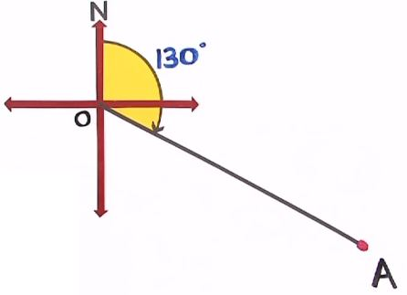

关于minAreaRect获得的rotatedRect之angle
刚学会了轮廓分析的一些基本操作，想使用minAreaRect的angle信息去分辨一些情况时... 却发现它给出的角度... 很玄学——输出的角度值和我们想象的不一样！

一般情况/常识/习惯性地，我们会根据方位角去计算角度

或者是笛卡尔平面角度
但是，OpenCV给我们的却是-0到-90°的角度。这角度是什么意思呢？该如何转换成我们熟悉的方式呢？
小实验
我做了个实验，探讨这角度的规律。以下便是结果：
实验源代码，有兴趣可以自己试试：
/*
* @Author: WaltPeter
* @Date: 2020-08-12 14:53:14
* @LastEditors: WaltPeter
* @LastEditTime: 2020-08-13 23:33:21
* @Description: file content
*/
#include <opencv2/opencv.hpp>
#include <vector>
using namespace cv;
using namespace std;
int main() {
float angle = 0;
for (int i=0; i<180; i++) {
Mat frame(Size(600,300), CV_8UC3, Scalar::all(255));
angle = i * 1.;
RotatedRect R1(Point(150,150), Size(100,200), angle);
Point2f vertices[4];
R1.points(vertices);
vector<vector <Point> > cnts;
vector<Point> cnt;
for (int i = 0; i < 4; ++i)
cnt.push_back(Point(vertices[i]));
cnts.push_back(cnt);
drawContours(frame, cnts, -1, Scalar(255,100,100), -1);
Mat bin;
cvtColor(frame, bin, COLOR_BGR2GRAY);
threshold(bin, bin, 127, 255, THRESH_BINARY_INV);
vector<vector<Point> > contours;
findContours(bin, contours, RETR_EXTERNAL, CHAIN_APPROX_SIMPLE);
RotatedRect rRect = minAreaRect(contours[0]);
rRect.points(vertices);
for (int i = 0; i < 4; ++i) {
line(frame, vertices[i], vertices[(i+1)%4], Scalar(0,0,255), 2);
putText(frame, to_string(i), vertices[i], FONT_HERSHEY_SIMPLEX, 0.6, Scalar::all(0), 2);
}
line(frame, Point(vertices[0]), Point2f(vertices[0].x+100, vertices[0].y), Scalar(0,0,255), 2);
rectangle(frame, Point(300,0), Point(600,300), Scalar::all(0), -1);
putText(frame, "Angle: " + to_string(rRect.angle), Point(320, 50), FONT_HERSHEY_SIMPLEX, 0.7, Scalar::all(255), 2);
putText(frame, "Width: " + to_string(rRect.size.width), Point(320, 90), FONT_HERSHEY_SIMPLEX, 0.7, Scalar::all(255), 2);
putText(frame, "Height: " + to_string(rRect.size.height), Point(320, 130), FONT_HERSHEY_SIMPLEX, 0.7, Scalar::all(255), 2);
imshow("result", frame);
waitKey(50);
}
destroyAllWindows();
return 0;
}
观察结果
- 矩形的最低点是第0个顶点，第1，第2，第3个顶点顺时针跟随。
- 高度是第0和1（=第2和3）个顶点之间的距离。宽度是第1个和第2（=第0和第3）个顶点之间的距离。
- 角度是从水平方向（视频中的红色尾巴）到矩形的第一边缘（逆时针）计算的。
- 角度在-0到-90之间变化（我不确定-0或-90是决定性因素，有时-0和-90是一样的）
minAreaRect角度换成笛卡尔平面角度
知道了这些特性，我们可以把它换算成我们常用的笛卡尔平面角度，即从0~180°的数值（180~360°其实是重复了）。代码如下：
float ang = rRect.angle;
if (rRect.size.width < rRect.size.height) {
ang -= 90;
}
ang = abs(ang);